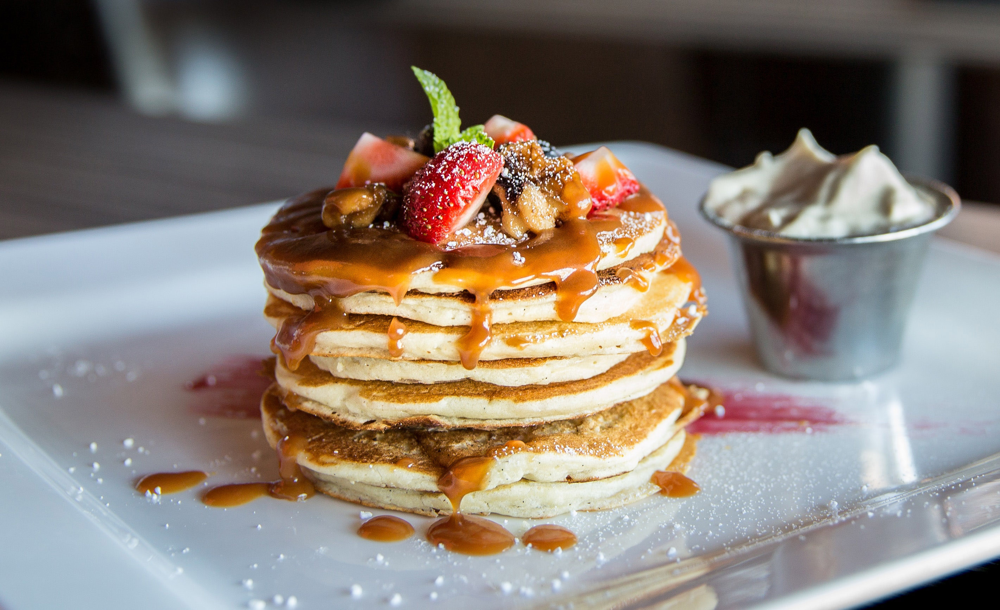

Pancakes
Un básico que no puedes dejar de hacer
Ingredientes
- 150 gramos de harina
- 10 gramos de polvo de hornear
- Sal
- 50 gramos de azúcar (¼ taza)
- 2 huevos
- 200 gramos de leche
- 50 gramos de mantequilla
Preparación
- Empieza mezclando en un bol los ingredientes secos, es decir, la harina, el polvo de hornear, la pizca de sal (puedes cernir estos insumos para tener unos pancakes aún más tiernos) y el azúcar.
- Agrega los ingredientes líquidos que son los huevos y la leche, recuerda que estos ingredientes deben estar a temperatura ambiente. Mezcla con la ayuda de un batidor de globo o unas varillas del centro hacia afuera para evitar los grumos.
- Cuando no haya ningún grumo en la masa, vierte la mantequilla derretida y mezcla bien.
- Calienta una plancha o una sartén antiadherente a fuego medio bajo. Antes de comenzar a cocinar la masa, unta un poco de mantequilla y espárcela con una hoja de papel toalla. Ahora sí, vierte una cucharada de la mezcla de hot cakes y dale movimientos circulares al cucharón para tener una masa lo más circular posible.
- Permite que la masa burbujee y al ver que ya no está líquida porque se ha formado una capa encima, introduce una espátula por debajo del pancake y dale vuelta. Esa cara debe verse dorada, si lo está, deja que el otro lado también tome color.
- Cuando tenga un color dorado uniforme, retira del fuego y elabora más hot cakes hasta terminar con toda la masa para tener un pastel bien alto.
- Para hacer el pastel, apila todos los hot cakes, endulza con miel y coloca un par de cubos de mantequilla encima.
Claudia Rodrigo
Siempre experimentando, ya sea con recetas u otros proyectos. A veces sale bien... y otras veces, también.
Ver perfil